<style>
    /* 基础样式 */
    body { 
        font-family: -apple-system, BlinkMacSystemFont, "Segoe UI", Roboto, "Helvetica Neue", Arial, sans-serif; 
        line-height: 1.8; 
        color: #2c3e50;
        max-width: 900px; 
        margin: 0 auto; 
        padding: 40px 20px; 
        background-color: #fff;
    }

    /* 章节与标题 */
    .chapter-unit { margin-bottom: 80px; }
    
    h1 { 
        font-size: 2.8em; 
        color: #1a5276; 
        border-bottom: 4px solid #3498db; 
        padding-bottom: 20px; 
        margin-top: 0; 
        margin-bottom: 30px; 
        letter-spacing: -0.5px;
    }
    .chapter-subtitle {
        font-size: 1.5em;
        color: #f39c12;
        display: block;
        margin-top: -20px;
        margin-bottom: 40px;
        font-weight: 300;
    }

    h2 { 
        font-size: 1.8em; 
        color: #2980b9; 
        margin-top: 50px; 
        padding-left: 15px; 
        border-left: 6px solid #e67e22;
        background: linear-gradient(to right, #fef9e7, transparent);
        padding-top: 5px;
        padding-bottom: 5px;
    }
    
    h3 { 
        font-size: 1.4em; 
        color: #16a085; 
        margin-top: 35px; 
        font-weight: 600; 
    }
    
    p { margin-bottom: 1.5em; text-align: justify; font-size: 1.1em; }
    strong { color: #2c3e50; font-weight: 700; }

    /* 特殊区域：侧边栏 */
    .sidebar { 
        background: #f4f6f7; 
        padding: 25px; 
        border-left: 5px solid #2980b9; 
        margin: 30px 0; 
        border-radius: 4px; 
        box-shadow: 0 2px 5px rgba(0,0,0,0.05);
    }
    .sidebar-title { 
        font-weight: bold; 
        color: #2980b9; 
        font-size: 1.2em; 
        margin-bottom: 15px; 
        display: block; 
        border-bottom: 1px solid #d5d8dc;
        padding-bottom: 8px;
    }

    /* 特殊区域：概念检查 */
    .concept-check {
        background-color: #e8f8f5;
        border: 1px solid #a2d9ce;
        padding: 20px;
        margin: 30px 0;
        border-radius: 8px;
        color: #0e6251;
        position: relative;
    }
    .concept-check::before { 
        content: "✅ 概念理解检查"; 
        display: block; 
        font-weight: bold; 
        margin-bottom: 10px; 
        font-size: 1.1em;
    }

    /* 特殊区域：终极问题 */
    .ultimate-question {
        background-color: #1a252f;
        color: #ecf0f1;
        padding: 30px;
        margin: 40px 0;
        border-radius: 8px;
        border: 1px solid #34495e;
    }
    .ultimate-question h3 { color: #f1c40f; margin-top: 0; border-bottom: 1px solid #7f8c8d; padding-bottom: 10px; }

    /* 习题区域 */
    .exercises { 
        background: #fffbe6; 
        padding: 30px; 
        margin: 50px 0; 
        border: 2px solid #f9e79f; 
        border-radius: 12px; 
    }
    .question-list li { margin-bottom: 15px; }

    /* 表格样式 */
    table {
        width: 100%;
        border-collapse: collapse;
        margin: 25px 0;
        font-size: 0.9em;
        box-shadow: 0 0 20px rgba(0, 0, 0, 0.1);
    }
    table th, table td {
        padding: 12px 15px;
        border: 1px solid #ddd;
        text-align: center;
    }
    table th {
        background-color: #2980b9;
        color: #ffffff;
        font-weight: bold;
    }
    table tr:nth-of-type(even) { background-color: #f3f3f3; }
    table tr:hover { background-color: #eaf2f8; }
    .table-caption {
        text-align: center;
        font-weight: bold;
        color: #555;
        margin-bottom: 10px;
        display: block;
    }

    /* 图片占位符 */
    .image-placeholder { 
        background: #ecf0f1; border: 2px dashed #bdc3c7; 
        display: flex; flex-direction: column; align-items: center; justify-content: center;
        margin: 30px auto 10px auto; 
        color: #7f8c8d; font-family: monospace; font-size: 0.9em;
        position: relative;
        overflow: hidden;
    }
    .image-placeholder::before { 
        content: "🖼️ 图像区域 " attr(data-bbox); 
        margin-bottom: 10px;
        font-weight: bold;
    }
    .caption { 
        font-size: 0.9em; 
        color: #555; 
        text-align: center; 
        margin-bottom: 40px; 
        font-style: italic;
        padding: 0 20px;
    }
    .caption strong { color: #e74c3c; font-style: normal; }

    /* 列表 */
    ul, ol { padding-left: 20px; }
    li { margin-bottom: 8px; }
    
    /* 上下标 */
    sup { font-size: 0.75em; vertical-align: super; }
    sub { font-size: 0.75em; vertical-align: sub; }
</style>
<article class="chapter-unit">
<!-- 封面页图 -->
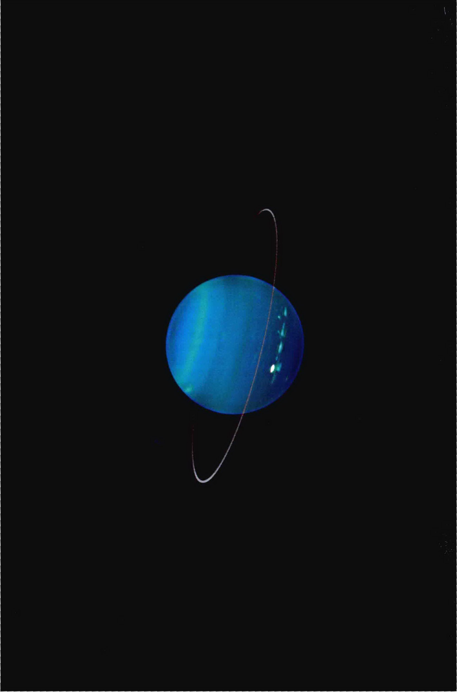
<h1>第10章 天王星和海王星</h1>
<span class="chapter-subtitle">太阳系的外围世界</span>
<aside class="sidebar">
<span class="sidebar-title">学习目标</span>
<p>本章的学习将使你能够：</p>
<ul>
<li>描述在外围行星的发现中，运气和计算是如何扮演了同样重要的角色的。</li>
<li>总结天王星和海王星之间的相似性和差异，并将它们与另外两颗类木行星进行比较。</li>
<li>描述天王星和海王星有哪些已知的内部结构。</li>
<li>解释外围行星的卫星能告诉我们关于过去的哪些信息。</li>
<li>将天王星和海王星的光环与木星和土星的光环进行比较。</li>
</ul>
</aside>
<p>古人并不知道这两个最外围的行星，它们是通过望远镜观测被发现的。天王星发现于1781年，而海王星发现于1846年。天王星和海王星的整体性质类似，所以很自然地将它们一并考察。它们是类木行星大家庭的成员。</p>
<p>然而，当我们更详细地研究天王星和海王星的性质时，我们发现内侧和外侧的类木行星之间有显著的区别。最外围的两颗类木行星是四个类木行星中体积最小，质量也最小的，并且其内部结构和大气组成的细节也与其较大的类木行星“表哥”之间有显著差异。它们的卫星和光环，也与在木星和土星周围发现的不同。这些差异并不是异常，相反，它们可以告诉我们许多关于外围行星形成和演化环境的重要信息。</p>
<aside class="sidebar">
<span class="sidebar-title">知识全景</span>
<p>外行星在我们太阳系的起源和演化过程中可能发挥了重要作用。然而，天王星和海王星“居住”在真正偏远的地区，因此很难发射探测器直接访问它们。迄今为止，只有少数几个探测器在飞往星际空间的过程中路过了它们，并对它们投去匆匆的一瞥。鉴于目前美国的太空计划主要优先进行其他事项，所以对这两个遥远而神秘的行星再次进行近距离探测，可能还要等很多年。</p>
</aside>
<h2>10.1 天王星和海王星的发现</h2>
<p>古代天文学家并不知道最外围的两颗行星——天王星和海王星。它们俩都是在现代科学迎来曙光之后被发现的，而且它们的发现都对现代科学的两大支柱——技术进步和数学建模——提供了很好的检验（1.2节）。</p>
<h3>天王星</h3>
<p>天王星是1781年由英国天文学家威廉·赫歇尔发现的。当时，赫歇尔正在从事观测暗星绘制星图的工作。在夜空中，他遇到了一颗看起来很奇怪的天体，他将其描述为“一个奇怪的东西，像云雾状恒星或者一颗彗星。”接下来的观测表明，它两者都不是。在赫歇尔的 6in (15cm) 望远镜中，它呈现为一个圆盘的形状，相对于恒星有移动，但与彗星相比，它又走得太慢了。赫歇尔很快意识到，他已经发现了太阳系的第七颗行星。</p>
<p>这是2000多年来，第一次发现新的行星。该事件在当时引起了不小的轰动。据说，赫歇尔的第一反应是将这颗新行星命名为“Sidus Georgium”（拉丁语为“乔治之星”），因为他的国王是英王乔治三世。不过，另一位天文学家约翰·波得反对用乔治的名字来命名一颗行星，他提出了一个聪明的建议，以传统的方式，也就是使用希腊罗马神话中的名字来给行星命名，于是天王星被命名为“乌拉诺斯”（Uranus）。他是土星萨图恩（Saturn，在希腊神话中名叫克洛诺斯，是天神宙斯的父亲）的父亲（因此他是宙斯的祖父），是天空之神，因此中译名为“天王星”。</p>
<p>天王星其实用肉眼是勉强可见的，前提是如果你确切地知道它的位置。冲日时，它的最大角直径可以达到4.1"，亮度刚好亮于肉眼可见的极限。它用肉眼看上去就像是一颗黯淡的、平凡的恒星，难怪会被古人忽视。即使在今天，也很少有天文学家能不用望远镜看到它。</p>
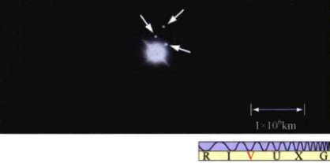
<div class="caption" style="text-align: right; clear: right;">
<strong>图10.1 从地球上看天王星</strong><br/>
        即使用最大型的地基望远镜拍摄天王星的照片，细节也几乎完全看不见。（箭头所指是天王星的三颗卫星。）[加利福尼亚大学(UC) / 利克天文台(Lick Observatory)]
    </div>
<p>即使通过最大型的地基光学望远镜观测（图10.1），天王星看起来也仅仅是一个微小的淡绿色圆盘，几乎没有更多的细节。随着旅行者2号于1986年飞越天王星，我们对天王星的认识急剧增加——虽然近距离照片几乎依然没有表现出表面细节（图10.2）。直到本章开篇照片的出现——这是在理想的观测条件下获得的，并使用了最先进的技术——才揭示出了天王星表面的云带和斑点，让人回想起其他的类木行星。</p>
<h3>海王星</h3>
<p>天王星被发现以后，天文学家描绘它的轨道，然后很快发现，这颗行星的预测位置总是与实际观测到的位置之间有一个微小的偏差。天文学家们竭尽所能，也找不到一条适合天王星运行的椭圆轨道能满足对它的精确测量结果。在天王星被发现半个世纪后，这个偏差已发展到1/4角分，如果这被解释为观测误差的话，那实在太大了。</p>

<div class="caption" style="text-align: right; clear: right;">
<strong>图10.2 天王星近景</strong><br/>
        这张天王星的照片由旅行者2号飞船从大约100万千米的距离处拍摄，然后发回地球，当时飞船正以相当于步枪子弹速度10倍的高速飞掠这颗巨行星。图像接近天王星的真实色彩，显示出它的上层大气几乎没有细节，除了北半球的几片束状云。[美国国家航空航天局 (NASA)]
    </div>
<p>合乎逻辑的结论是，一个未知的天体对天王星施加了引力作用——虽然比太阳弱得多，但仍然可以测量出来。但是，那会是什么样的天体呢？天文学家们意识到，在太阳系里必然有另一颗行星干扰了天王星的运动。</p>
<p>19世纪40年代，两位数学家独立解决了确定新行星的质量和轨道这一难题。一位英国天文学家约翰·亚当斯在1845年9月解决了这个问题。在次年6月，法国数学家于尔班·勒威耶得出了基本相同的答案。在1846年的夏天，英国天文学家寻找新行星的努力一无所获。同年9月，德国天文学家约翰·伽勒在柏林天文台开始了自己的搜索，使用新落成的设备和更精确的星图。他在距预报位置1~2度的地方找到了这颗新的行星——这仅仅是他的第一次尝试！在一些关于命名和荣誉的争吵之后，新的行星被命名为尼普顿（Neptune，即海皇波塞冬在罗马神话中的名字，中文译名“海王星”）。现在，亚当斯和勒威耶（但没有伽勒！）被认为是海王星的共同发现者。</p>
<p>海王星的轨道周期为163.7个地球年，因此自从它被发现以来，到现在才完成公转一圈。与天王星不同，遥远的海王星无法用裸眼看到，但可以通过一架小望远镜看到——事实上，根据伽利略的笔记，他实际上很可能已经看到了海王星，虽然当时他不知道自己看到的这个小亮点究竟是什么。通过大型望远镜，可观测到海王星呈现为蓝色的盘状，在冲日时的最大角直径为2.4"。</p>
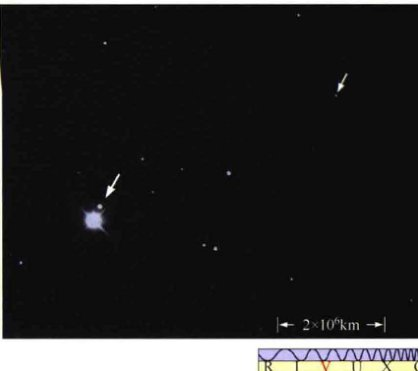
<div class="caption" style="text-align: left; clear: left;">
<strong>图10.3 从地球上看海王星</strong><br/>
        海王星和它的两颗卫星，海卫一（左箭头）和海卫二（右）。照片用一台大型地基望远镜拍摄。[加利福利亚大学(UC) / 利克天文台(Lick Observatory)]
    </div>
<p>图10.3显示了在地球上长曝光拍摄的海王星和它的最大卫星——海卫一。海王星是如此遥远，这个星球的表面特征几乎不可能被辨别。即使在最好的观测条件下，也只有少数几个特征可以被看到。这些特征揭示了五彩的云带、浅蓝的色调似乎占据主导地位。随着旅行者2号的到达，更多的细节被展现出来，如图10.4所示。从表面上看，海王星类似一个蓝色调的木星，大气中的云带和斑点清晰可见。</p>
<div class="concept-check">
<strong>概念理解检查</strong><br/>
        对天王星轨道的观测如何导致了海王星的发现？
    </div>

<div class="caption" style="text-align: right; clear: right;">
<strong>图10.4 海王星近景</strong><br/>
        (a) 旅行者2号从大约100万千米的距离处以真彩色拍摄的海王星照片。(b) 一张更近的照片，分辨率约10km，显示了一些宽度50~200km不等的云带和条纹。[美国国家航空航天局(NASA)]
    </div>
<h2>10.2 轨道和物理特性</h2>
<p>天王星和海王星在太阳行星家族的外围，其轨道半长轴分别为19.2AU和30.1AU，轨道周期均为一个世纪左右。它们的轨道恰好位于柯伊伯带内侧（见第11和12章），柯伊伯带也主要受到天王星和海王星的影响。</p>
<p>图10.5以相同的比例显示了天王星和海王星，并将它们与地球放在一起作比较。这两颗巨行星在体积上颇为相似。天王星的半径是地球的4.0倍，海王星的半径是地球的3.9倍。它们的质量（首先通过从地球上观测它们的大卫星确定，然后再由旅行者2号精确测定）也很相近，天王星为14.5倍地球质量，海王星为17.1倍地球质量。天王星的平均密度为1300kg/m<sup>3</sup>，海王星为1600kg/m<sup>3</sup>。这样的密度意味着，这两颗行星的内部有较大的岩石核心，相比于木星或土星，它们的岩石核心占行星总质量的比重更大。它们的核心可能在大小、质量和组成上与两颗更大的巨行星差不多。</p>

<div class="caption">
<strong>图10.5 类木行星</strong><br/>
        木星、土星、天王星、海王星和地球的相对大小。天王星和海王星在体积上很接近，每一个都可能有一个质量为地球10倍的核心。木星和土星大得多，但它们的岩石内核可能与天王星和海王星核心的质量相当。[美国国家航空航天局(NASA)]
    </div>
<p>跟其他的类木行星一样，天王星也有一个很短的自转周期。在地球上通过观测天王星光谱线的多普勒效应，揭示出天王星的“一天”大约是10~20h。现在我们知道，天王星自转周期的精确值是17.2h——这是旅行者2号计时测定与天王星磁层有关的射电信号而精确得出的。同样地，类似木星和土星，天王星的大气层也存在较差自转。天王星的大气层在两极附近转动得较快（周期为14.2h），在赤道附近转动得较慢（周期为16.5h）。</p>
<p>我们太阳系的每颗行星似乎都有一些突出的特点，天王星也不例外。与所有其他的行星不同——这些行星的自转轴大致垂直于黄道面——天王星的自转轴几乎位于黄道面内，其黄赤交角的精确值为98°（因为北极位于黄道面下方，天王星的自转类似金星，被归类为逆向）。我们可以这样说，相对于其他行星，天王星是“躺着”自转的。因此，在一段时间内，天王星的北极几乎是直接朝向太阳的（在第6章中，我们约定，行星的自转方向从北极上空看总是逆时针的（也就是说，行星总是自西向东自转）。(6.2节)）。而在半个天王星年后，其南极又朝向太阳，如图10.6所示。当旅行者2号于1986年遭遇天王星时，天王星的北极正指向太阳，所以那时是其北半球的夏天。</p>
<p>天王星奇怪的自转轴方向会产生一些极端的季节性影响。在北半球的夏季，北极点最接近太阳时，太阳的高度最高，北极地区的观测者将会发现太阳始终不落。相反，它会随着天王星的自转在天空中围绕天王星的北天极绕出一个小圆圈，完成一周（逆时针）需要17h。(1.3节)随着时间的推移，随着天王星沿着其轨道公转，其自转轴指向越来越远离太阳，这个圆圈将逐渐增大，太阳每天在天空中高度也逐渐降低。最终，太阳在一天之中将循环往复地升起和落下。接下来，夜晚将逐渐变长。在夏至点之后的21个地球年之后，迎来秋分，这时日夜等长，均为8.5h。</p>

<div class="caption">
<strong>图10.6 天王星的季节</strong><br/>
        由于天王星的黄赤交角为98°，所以它经历着太阳系中已知的最极端的季节。
    </div>
<p>白昼将继续缩短，直到有一天，太阳将无法升起。随后，完全黑暗时期的长度将等于之前完全白昼时期的长度，将北半球拉入寒冬的深渊。最终，太阳将再次升起，春分以后，白昼的日子会长于黑夜，接下来，观测者会再次经历一个漫长的虽然阳光暗淡但从不间断的夏天。从赤道上的观测者的视角来看，相比于两极，夏季和冬季将几乎是同样寒冷的季节，因为太阳从来就不会在地平线上升起得太高。春天和秋天是一年中最温暖的季节，太阳几乎每天都从头顶通过。</p>
<p>天文学家不清楚为什么天王星以这种方式倾斜——要知道，其他行星的自转轴离开黄道面很远。多年来的主流理论认为，是一次在太阳系形成阶段晚期的单独灾变事件导致了这一结果，比如，天王星和另一颗质量是地球几倍大的天体发生了擦碰，因而改变了自身的自转轴。(3.7节)然而，最近的计算机模拟显示，如果是这样的话，天王星的卫星系统无法“跟上”这一突变，这些卫星就不会有现在观测到的这样顺行的、并且围绕天王星赤道面的轨道。相反，似乎更可能是两次或者多次比较小（但仍然很有力）的撞击，比较温柔地改变了这颗行星的自转轴，这样可以让卫星们保持它们的轨道。但问题是，这违背了既定的观点，即这种撞击在外太阳系是罕见的。这一结果可能迫使天文学家重新思考太阳系形成的凝聚理论（在第3章中所述）的一些细节。</p>
<p>相比天王星，海王星的云层表现出更多的变化和差异，这令地球上的天文学家甚至在旅行者2号于1989年飞掠海王星之前就确定了它的自转速度。海王星的大气平均自转周期为17.3h（相当类似于天王星）。旅行者2号对海王星的无线电辐射测量表明，该行星的磁场自转周期为16.1h，并推测该行星内部的自转周期也是如此。因此，海王星的大气层转速比其内部慢得多这一点在类木行星世界中是独一无二的。海王星的自转轴以29.6°倾斜于该行星轨道平面的法线，与土星的27°相似。</p>
<div class="concept-check">
<strong>概念理解检查</strong><br/>
        天王星的自转什么不同寻常之处？
    </div>
<h2>10.3 天王星和海王星的大气</h2>
<h3>组成</h3>
<p>对天王星和海王星的浓密云层反射的太阳光的光谱研究表明，这两颗行星的外层大气（我们实际进行光谱测量的部分）相当类似于木星和土星的大气。最丰富的元素是氢分子 (H<sub>2</sub>, 84%)，其次是氦 (He, 约14%)，然后是甲烷 (CH<sub>4</sub>)。海王星的甲烷含量（约3%）比天王星 (2%) 更丰富。氨 (NH<sub>3</sub>) 比较独特，它在木星和土星系统中扮演着如此重要的角色，却在最外层的类木行星世界里找不到任何显著存在的证据。</p>
<p>气态氨和甲烷的丰度在类木行星间有规律地变化。木星的气态氨比甲烷多得多，但是随着远离太阳，我们发现更遥远的行星的氨含量稳步减少，甲烷含量相对增大。这种变化的原因是温度。氨气在约70K冻结成氨结晶体。这个温度比木星和土星云顶的温度低，但比天王星 (58 K) 和海王星 (59 K) 云顶的温度高。因此，最外面的类木行星在它们的大气中只有很少的或根本没有气态氨，所以它们的光谱（只记录大气中的气体）只显示有微量的氨。</p>
<p>甲烷含量的增加主要造成了外类木行星的蓝色调。甲烷吸收长波的红光很有效，所以从这两颗行星上反射的阳光缺乏红色和黄色的光子，呈现出蓝绿色或蓝色。随着甲烷浓度的增加，反射光应该变得更蓝——这是观察到的趋势：天王星，甲烷较少，看起来是蓝绿色；而海王星，甲烷更多，看起来呈现出明显的蓝色。</p>
<h3>天气</h3>
<p>旅行者2号在天王星的大气层里只发现了极少量的云层特征（图10.2），而且这些特征是经过了强力的计算机后期处理才可见的。图10.7显示了一系列哈勃太空望远镜拍摄的天王星的照片。图10.7 (a) ~ 图10.7 (c) 是经过大量处理的光学图像，显示了一对明亮的云环绕天王星运行的过程。图10.7 (d) 显示了一个伪彩色、近红外波段的天王星。这种图像中的颜色通常指示了我们能看透大气的深度。蓝绿色区域是清晰的大气区域，天文学家可以在那里研究较低云层的情况。黄灰色显示了阳光从高层云或从大气霾上被反射。而橙红色，比如该图像南侧（右）边缘的突出“亮点”，表明这里有非常高的云，很像经常出现在地球大气高层区域中的白色稀疏的卷云。如同地球上的卷云，天王星的这些云以冰晶为主，形成于该行星寒冷的上层大气。</p>
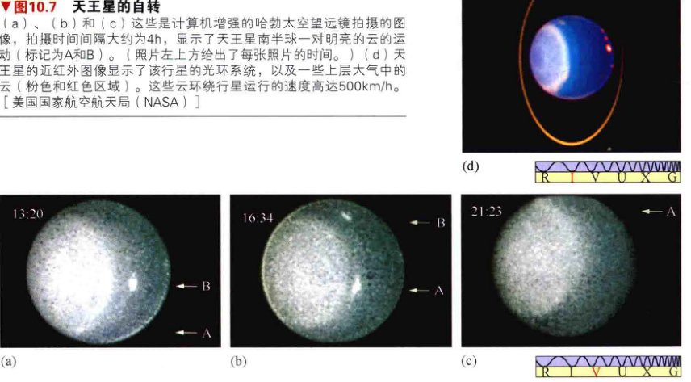
<div class="caption">
<strong>图10.7 天王星的自转</strong><br/>
        (a)、(b) 和 (c) 这些是计算机增强的哈勃太空望远镜拍摄的图像，拍摄时间间隔大约为4h，显示了天王星南半球一对明亮的云的运动（标记为A和B）。（照片左上方给出了每张照片的时间。）(d) 天王星的近红外图像显示了该行星的光环系统，以及一些上层大气中的云（粉色和红色区域）。这些云环绕行星运行的速度高达500km/h。[美国国家航空航天局(NASA)]
    </div>
<p>天王星显然没有任何显著的内部热源，并且因为该行星具有较低的表面温度，所以它的云层仅在大气中较低、较温暖的地方被发现过。缺乏高层云意味着，我们要想看到任何结构都必须看向天王星大气很深的地方，所以在其他类木行星上我们常见云带和斑点——这些结构表现出了环流模式，但在天王星上，这些结构却因为平流层霾的干扰而很大程度上被“清洗”了（在可见光波段）。再看看本章一开始的天王星照片，显示了更清晰的大气结构。注意其北极附近的斑驳结构（在右侧），科学家认为这可能是一个极地涡，类似在金星上看到的。(6.5节)</p>
<p>通过类似图10.7那样的计算机处理后的图像，天文学家发现天王星的大气云和环流模式运动的方向和该行星的自转方向相同，风速范围为200~500km/h。事实上，跟踪这些云可以让我们测量出天王星的较差自转——这一点前面提到过。尽管阳光照射的角度奇怪（记住，它现在是在北半球的夏末），但天王星的快速自转仍然引导了风的流动形成云带，让人想起那些在木星和土星上发现的云带。风速在北极附近更大，可能是因为天王星的那个部分此时接收到了最大量的太阳热量。尽管主要的风流方向是自东向西，但大气层看上去却十分有效地将热量从被加热的北方输送到了未被加热的南半球。因此，虽然南方的绝大部分目前在完全黑暗的环境中，但温度也仅仅只比北方低几个开尔文。</p>
<p>相比天王星，海王星的云层和云带结构更容易被看到。虽然海王星离太阳更远，但该行星的上层大气实际上比天王星还要略微温暖一点。海王星有一个内部的能量来源，这一点像木星和土星，却不像天王星。事实上，海王星辐射出比它从太阳接收的多2.7倍以上的热辐射。这一加热过程的原因仍不明朗。一些科学家认为，海王星多余的甲烷帮助将该行星“绝缘”，倾向于保持其最初就较高的内部温度。如果是这样，那么海王星内部的热量来源就和木星相同：能源在行星形成时就保留了下来。(8.3节)额外的热量和较少的霾组合在一起，可能造成了海王星的大气中有更大的可见结构，如图10.8所示，其云层位于比天王星中云层更高的位置。</p>
<p>海王星形成了几个风暴系统，在外观上类似我们在木星上看到的（假设它们被相同的基本过程产生和维持）。最大的风暴被简单地称为“大暗斑”，如图10.8 (a) 所示。(8.2节)这个斑点由旅行者2号于1989年发现，其大小跟地球相当，位于海王星的赤道附近，并表现出许多和木星上大红斑相同的一般特性。围绕它的环流为逆时针运动，也跟大红斑类似。并且，在风和大暗斑相结合的地方，出现了湍流，与海王星北部和南部的纬向流相互作用。环绕大暗斑和其他斑点的气流可能驱动上升气流到较高的高度，在那里，甲烷从大气中结晶而出，形成高层卷云——在图10.8 (a) 中可见，它们位于主云顶之上约50km处。天文学家研究暗斑性质的时间并不长，但是，如图10.8 (b) 所示，当哈勃太空望远镜在20世纪90年代中期之后观测海王星时，这个暗斑已经消失了，虽然有几个新的风暴（亮斑）又出现了。</p>
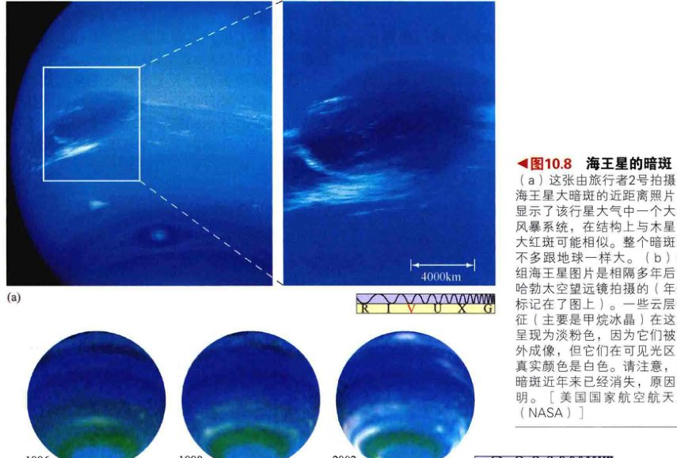
<div class="caption" style="text-align: right; clear: right;">
<strong>图10.8 海王星的暗斑</strong><br/>
        (a) 这张由旅行者2号拍摄的海王星大暗斑的近距离照片，显示了该行星大气中一个大的风暴系统，在结构上与木星的大红斑可能相似。整个暗斑差不多跟地球一样大。(b) 这组海王星图片是相隔多年后由哈勃太空望远镜拍摄的（年份标记在了图上）。一些云层特征（主要是甲烷冰晶）在这里呈现为淡粉色，因为它们被红外成像，但它们在可见光区的真实颜色是白色。请注意，大暗斑近年来已经消失，原因不明。[美国国家航空航天局(NASA)]
    </div>
<p>如图10.8 (b) 所示的红外图像展示了海王星的动力学天气模式。该行星的天气可以在短短的几个自转周期中改变：狂风呼啸，速度超过1500km/h——几乎相当于海王星上层大气中音速的一半，并且伴随有地球大小的风暴。海王星上风暴模式已经被建立，但很难被理解。在地球上，天气系统由太阳的热量驱动。然而，海王星远离太阳，在太阳系的外围，太阳的加热效果微不足道——只相当于地球处的千分之一。在这么冷的情况下，海王星怎么会如此活跃呢？</p>
<p>有趣的是，图10.8 (b) 所示的三幅海王星图像表明，该行星的南半球在图示的这段时期显著变亮。显然，尽管太阳的加热微弱，但海王星正在对太阳能量的增加产生反应，其南半部正慢慢地从春天进入夏天。红外VLT观测表明，已经被阳光照射了30年的南极地区，比海王星的其余部分温暖大约10K。</p>
<div class="concept-check">
<strong>概念理解检查</strong><br/>
        为什么行星科学家们对海王星上的强风和迅速变化的风暴系统感到困惑？
    </div>
<h2>10.4 磁层及内部结构</h2>
<p>旅行者2号发现，天王星和海王星都具有相当强大的内部磁场——大约比地球磁场强100倍，是土星磁场的1/10。然而，因为天王星和海王星比地球大得多，在云顶的磁场摊开在比地球周边大得多的体积上，因此强度实际上和地球磁场的强度相当。天王星和海王星都有大量的磁层，主要源自于从太阳风捕获的电子和质子，或是由从行星本身逃逸的电离氢气体所创建。</p>
<p>当旅行者2号到达天王星时，它发现该行星的磁轴相对自转轴倾斜了约60°。在地球上，这种程度的倾斜将令北磁极位于加勒比海某处。此外，在天王星上，磁场线并不是以该行星为中心的。这是因为虽然天王星的磁场像一个条形磁铁，但这个“磁铁”并不是位于行星中央，而是偏离中心大约1/3个行星半径。图10.9显示了4颗类木行星的磁场结构，同时显示了地球的磁场作为比较。条形磁铁的位置和方向表示所观测到的行星磁场，条形磁铁的尺寸表示了磁场强度。</p>
<p>由于发电机理论普遍预测一颗行星的磁轴应该大致对准于它的自转轴——正如地球、木星、土星和太阳的情况——天王星上这种完全没对准的情况向一些研究人员暗示，也许该行星的磁场在磁场反转的过程中被锁住了。(4.5节)另一种可能性是，这种奇怪的磁场倾斜与天王星的自转轴倾斜是以某种形式相联系的——也许一次灾难性的碰撞同时撞歪了两个轴。这些想法在1989年被证明是错误的，那时旅行者2号发现海王星的磁场也相对自转轴有明显的倾斜，角度达46°，如图10.9 (d) 所示，并且也大大偏离这颗星球的中心。现在看来，天王星和海王星的内部结构不同于木星和土星，这种差异改变了行星的磁场是如何产生的理论。</p>
<p>理论模型表明，天王星和海王星类似木星和土星，都有岩石核心——大小与地球相当，质量可能是地球的10倍。然而，作用在天王星和海王星核心外部的压力太低了，远不如木星和土星核心所受到的压力，不足以使氢进入金属态，所以氢保持其分子形式进入行星的内核。天文学家推测，在云层下的深处，天王星和海王星可能有很高的密度，“稀泥”样的内部含有厚厚的水云层。有这样一种可能性，天王星和海王星大量的氨溶解在假设的水中，因此在较高的层中基本没有氨。这样的氨的溶液将提供一个厚厚的、导电的离子层，可以令人信服地解释天王星和海王星未对齐的磁场——如果驱动磁场的循环电流主要产生在远离行星中央和自转轴的区域的话。</p>
<p>目前，我们所知的天王星和海王星的内部信息根本不够，无法评估这幅图景的正确性。图10.10总结了我们的知识现状，这幅图比较了四颗类木行星的内部结构。</p>
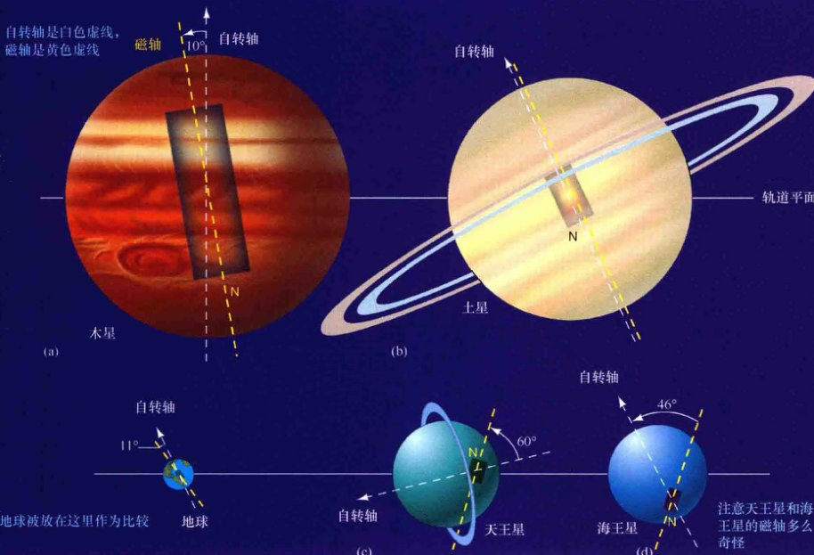
<div class="caption">
<strong>互动图10.9 类木行星的磁场</strong><br/>
        四颗类木行星的磁场强度、方向和偏移量的比较。行星按比例绘制，并且磁场产生于一个假想的条形磁铁。每个磁铁的尺寸和位置代表该行星磁场的强度和方向。
    </div>

<div class="caption">
<strong>互动图10.10 类木行星的内部</strong><br/>
        四颗类木行星的内部结构比较。(a) 行星按比例绘制。(b) 每颗行星内部区域的相对比例。
    </div>
<div class="concept-check">
<strong>概念理解检查</strong><br/>
        天王星和海王星的磁场有什么奇怪之处？
    </div>
<h2>10.5 天王星和海王星的卫星系统</h2>
<p>类似木星和土星，天王星和海王星都拥有广阔的卫星系统，每个系统都包括几颗大型卫星——很久以前就为地面观测者所知，以及许多较小的小卫星——由旅行者2号或最近的地基观测发现。</p>
<h3>天王星的卫星</h3>
<p>截至2013年，天王星共发现了27颗卫星。那些直径超过300km的卫星的性质列在表10.1中。</p>
<p>1789年，威廉·赫歇尔发现并命名了天卫三和天卫四——这是天王星的五颗主要卫星中最大的两个。1851年，英国天文学家威廉·拉塞尔发现了天卫一和天卫二，这是接下来最大的卫星。1948年，杰拉德·柯伊伯发现了天卫五，这是主要卫星里最小的。按照距离行星由近到远排序，它们是：天卫五（距离5.1个行星半径，下同）、天卫一 (7.5)、天卫二 (10.4)、天卫三 (17.1) 和天卫四 (22.8)。由旅行者2号发现的10颗小卫星位于天卫五的轨道内侧。它们中的许多都与天王星的环系统密切相关。所有这些卫星都围绕在天王星倾斜的赤道面上，几乎垂直于黄道，以圆形、被潮汐锁定的轨道运行，分享其母星的极端季节。</p>
<p>余下的12颗卫星（原文22颗应该是错的，只剩下12颗了——译者注），其中一颗很接近天王星，是通过对旅行者2号的图像进行仔细的再分析后被发现的。余下所有的卫星是由自1997年以来的系统性的地基搜索而发现，使用的技术是已经成功用于确定新的木星卫星和土星卫星的技术。(9.5节)这些小天体的轨道远离天王星，大多有着逆行的、非常倾斜的轨道，类似木星和土星的外围卫星，也类似火星的火卫一和火卫二。这些卫星每颗都被认为是行星际碎片在掠过天王星的大气层时被捕获的。</p>
<p>5颗最大的天王星卫星在许多方面类似于6颗中型的土星卫星。(9.5节)它们的密度范围为1100~1700kg/m<sup>3</sup>，暗示了其组成成分主要是冰和岩石，就像土星的卫星。它们的直径范围从天卫三和天卫四的1600km，到天卫二和天卫一的1200km，再到天卫五的480km。天王星没有能与木星的伽利略卫星或土星的单一大卫星土卫六相媲美的卫星。图10.11按比例展示了天王星的五颗大卫星；作为比较，还展示了我们的月球和海王星的两颗中型卫星（海卫八和海卫二）。</p>
<p>五颗卫星中最外围的是天卫三和天卫四，它们表面布满了撞击坑，几乎没有地质活动的迹象。其整体外观（也很可能是它们的历史）可以与土星的卫星土卫五相比，但它们缺乏土卫五上的纤维状条纹。此外，像所有的天王星卫星一样，它们比土星卫星的反射率低，这表明它们冰冻的表面很脏。</p>
<span class="table-caption">表10.1 天王星和海王星的主要卫星<sup>①</sup></span>
<table>
<thead>
<tr>
<th rowspan="2">名字</th>
<th colspan="2">到行星的距离</th>
<th rowspan="2">轨道周期<br/>(天)</th>
<th rowspan="2">大小<br/>(最长直径, km)</th>
<th>质量<sup>②</sup></th>
<th colspan="2">密度</th>
</tr>
<tr>
<th>(km)</th>
<th>(行星半径的倍数)</th>
<th>月球的质量</th>
<th>(kg/m³)</th>
<th>(g/cm³)</th>
</tr>
</thead>
<tbody>
<tr>
<td>天卫五</td>
<td>130 000</td>
<td>5.08</td>
<td>1.41</td>
<td>480</td>
<td>0.00090</td>
<td>1100</td>
<td>1.1</td>
</tr>
<tr>
<td>天卫一</td>
<td>191 000</td>
<td>7.48</td>
<td>2.52</td>
<td>1160</td>
<td>0.018</td>
<td>1600</td>
<td>1.6</td>
</tr>
<tr>
<td>天卫二</td>
<td>266 000</td>
<td>10.4</td>
<td>4.14</td>
<td>1170</td>
<td>0.016</td>
<td>1400</td>
<td>1.4</td>
</tr>
<tr>
<td>天卫三</td>
<td>436 000</td>
<td>17.1</td>
<td>8.71</td>
<td>1580</td>
<td>0.048</td>
<td>1700</td>
<td>1.7</td>
</tr>
<tr>
<td>天卫四</td>
<td>583 000</td>
<td>22.8</td>
<td>13.5</td>
<td>1520</td>
<td>0.041</td>
<td>1600</td>
<td>1.6</td>
</tr>
<tr>
<td>海卫八</td>
<td>118 000</td>
<td>4.75</td>
<td>1.12</td>
<td>440</td>
<td>-</td>
<td>-</td>
<td>-</td>
</tr>
<tr>
<td>海卫一</td>
<td>355 000</td>
<td>14.3</td>
<td>-5.88<sup>③</sup></td>
<td>2710</td>
<td>0.292</td>
<td>2100</td>
<td>2.1</td>
</tr>
<tr>
<td>海卫二</td>
<td>5 510 000</td>
<td>223</td>
<td>360</td>
<td>340</td>
<td>0.000 003 4</td>
<td>1200</td>
<td>1.2</td>
</tr>
</tbody>
</table>
<p style="font-size: 0.8em; color: #666;">
        ①只有直径大于300km的卫星列于此表。<br/>
        ②月球的质量 = 7.4 × 10<sup>22</sup> kg，天王星质量 = 8.5 × 10<sup>25</sup> kg，海王星质量 = 7.3 × 10<sup>25</sup> kg。<br/>
        ③负数说明是逆行轨道。
    </p>

<div class="caption">
<strong>图10.11 天王星和海王星的卫星</strong><br/>
        按比例显示的天王星的五颗最大的卫星和海王星的两颗中型卫星（海卫八和海卫二），以及月球的一部分。在这些卫星上可见的最小细节都大约是15km宽。[美国国家航空航天局(NASA)、利克天文台(Lick Observatory)]
    </div>
<p>反射率较小的一个可能的原因或许仅仅是天王星和海王星附近比更接近太阳的地方分布有更多细小的“乌黑”颗粒。另一种解释现在被许多行星科学家更多地考虑，即这些卫星的表面被更多的辐射和高能粒子所撞击。这些撞击可能会打破卫星表面上的分子结构，最终导致化学反应，慢慢形成一层较暗的有机物质层。这种<strong>辐射变黑</strong>被认为导致了外太阳系卫星和环的颜色总体上比较深。在这两种情况下，一颗卫星越长时间没有地质活动和未受陨石撞击，其表面颜色就应该越深。</p>
<p>天王星最黑暗的卫星是天卫二。这颗卫星几乎没有显示出任何过去有表面活动的证据，它的唯一标志是一个来历不明的亮点，在其北半球横跨约30km的尺度。相比之下，与天卫二大小相近的天卫一更靠近天王星，似乎在过去发生过一些表面活动。天卫一表现出了重整表面的一些信号，展示出的表面裂纹像在土星的卫星土卫三上所看到的那样。土卫三的裂纹可能是因陨石撞击而形成的。与土卫三不同的是，天卫一的表面活动有可能源自其内部。天卫一的内部力量和外部的潮汐应力（由于天王星的引力）扭曲了这颗卫星，导致了其表面的裂纹。</p>
<p>最奇怪的天王星的冰卫星是天卫五，如图10.12所示。在旅行者2号到达它之前，天文学家预计天卫五可能类似于土星的卫星土卫一，其大小和位置都最接近。然而，天卫五并非人们想象的是一个比较无趣的、布满环形山且缺乏地质活动的世界，而是显示了丰富的表面地形，包括山脊、峡谷、巨大的椭圆断层，以及其他许多曲折的地质特征。</p>

<div class="caption">
<strong>图10.12 天卫五（米兰达）</strong><br/>
        这是由旅行者2号拍摄的小行星大小的天王星最内侧的卫星——天卫五。它有一个奇怪的、断裂的表面，暗示着过去的激烈活动，但沟槽和裂缝的原因目前还不清楚。插入图的分辨率大约为2km。插入图底部的长长的“峡谷”深度近20km。[美国国家航空航天局(NASA)]
    </div>
<p>为了解释天卫五为什么结合了这么多不同类型的表面特征，一些研究人员推测，这颗令人困惑的天体已经遭到了好几次灾难性的破坏（因为内部或外部的过程），于是碎片无序而混乱地重新组合在一起。当然，根据外围卫星大环形山的分布率，这类破坏性撞击在天王星系统中可能曾经相当普遍。不过，需要经过很长一段时间，我们才可以得到更详细的信息来测试这个理论。</p>
<h3>海王星的卫星</h3>
<p>从地球上，我们只能看到两颗卫星绕海王星旋转。1846年，威廉·拉塞尔发现了海卫一，这是一颗更靠内侧的卫星；1949年，杰拉德·柯伊伯发现了海卫二；旅行者2号发现了6颗额外的卫星，均小于几百千米，并都位于海卫二的轨道内侧。自2002年以来，地面观测一共发现了13颗卫星，其中有5颗更小的卫星在较大而偏心的轨道上运动。表10.1中列出了海王星直径大于300km的3颗卫星。海卫八和海卫二，是海王星仅有的中型卫星（按照我们以前的定义），如图10.11所示。(9.5节)</p>
<p>在其卫星系统中，我们发现了海王星对太阳系的特殊性名单所做出的贡献。不像其他的类木行星，海王星没有常规的卫星系统——也就是说，没有卫星在大致呈圆形的、位于赤道上方并且顺行的轨道。最大的卫星海卫一的直径是2700km，占据了一个圆形的逆行轨道，轨道到行星的距离为355,000km (14.3个行星半径)，轨道平面相对于海王星的赤道平面有大约20°的倾角。海卫一是我们太阳系中唯一一颗有着逆行轨道的大卫星。另一个能从地球上看到的卫星海卫二，直径只有340km。这颗卫星绕海王星的轨道是顺行的，但轨道很细长，最近的点距海王星约140万千米，最远的点距海王星约970万千米。海卫二的大小和组成可能类似海王星较小的内侧卫星。</p>
<p>旅行者2号来到距海卫一表面约24,000km的位置，为我们提供了迄今为止几乎全部的关于那个遥远的冰雪世界的知识。天文学家重新确定了该卫星的半径（向下修正了约20%），并在第一时间测量了它的质量。在土星的土卫六和木星的四大伽利略卫星之后，海卫一是外太阳系的六颗大卫星之一。海卫一是其中最小的，质量是排名第五位的木卫二的一半左右。</p>
<p>在距太阳45亿千米之遥的地方，并具有相当有反射能力的表面，海卫一的表面温度只有37K。它有稀薄的氮气大气——可能比地球的大气层稀薄十万倍，还拥有一个主要由水冰构成的表面。图10.13显示了旅行者2号拍摄的海卫一南极区域的拼接图像。该卫星的低温产生了一层氮霜，在极冠上出现而又蒸发，有点像在火星上由二氧化碳霜引起的极冠的季节性变化。这些霜在图上可见，是位于右侧略带粉红色的区域。</p>
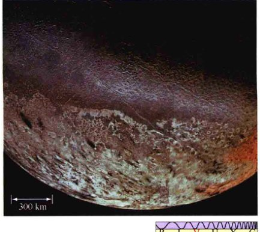
<div class="caption" style="text-align: left; clear: left;">
<strong>图10.13 海卫一</strong><br/>
        海卫一的南极地区，呈现出多样的地貌，从深深的山脊和裂缝到水冰冻结的湖泊，都暗示着过去的表面活动。右下角的橙色区域是氮霜，形成了该卫星的极冠。照片的分辨率约4km。左侧底部的黑色长条纹可能形成于表面上的液氮间歇泉。[美国国家航空航天局(NASA)]
    </div>
<p>总体而言，海卫一表现出明显缺乏环形山的特点，可能表明其表面活动抹去了大部分撞击的证据。还有许多迹象表明它过去很活跃。例如，海卫一的表面有巨大的裂缝，类似我们在木卫三上看到的，海卫一上奇怪的哈密瓜皮般的地貌可能暗示了在该卫星的一生中曾多次反复进行的断层和形变。此外，海卫一上有许多水冰冻成的“湖泊”（图10.14），这可能起源于火山。基本过程可能类似于在土星的卫星土卫二上观测到的水火山现象。(9.5节)</p>
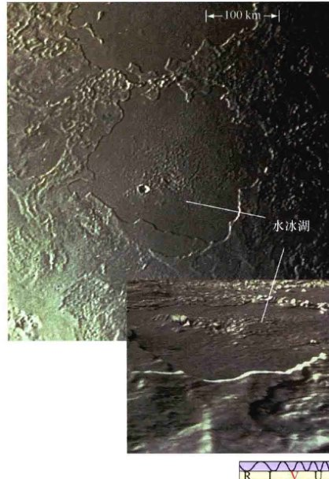
<div class="caption" style="text-align: right; clear: right;">
<strong>图10.14 海卫一上的水冰</strong><br/>
        海卫一上的这个近似圆形的像湖泊一样的特征可能由冰火山喷发所形成。水“熔岩”固化，留下了一个平滑的表面。撞击坑的缺乏意味着这次喷发是一个相对较新的事件。底部的插入图是计算机生成的图像，模拟了站在海卫一的表面观看的视角，显示出了该区域的地形。[美国国家航空航天局(NASA)]
    </div>
<p>海卫一的表面活动不只是过去的事情。旅行者2号经过这颗卫星时，它的摄像头检测到两个巨大的氮气射流从地表喷出，高度达数千米。这些“间歇泉”的形成原因被认为是这样的：海卫一表面下的液氮被其内部能源或由太阳微弱的光加热和汽化。汽化产生高压，驱动气体通过地壳裂缝，创造出了旅行者2号所看到的景观。科学家推测，氮间歇泉在海卫一上可能是普遍的，也许正是它形成了该卫星稀薄的大气层的大部分。图10.13左侧底部长长的黑色条纹可能是因间歇泉将富含碳的黑暗物质从卫星内部运送到表面而形成的。在海卫一稀薄大气层中的风可能也发挥了在表面上传播这些物质的作用。</p>
<p>这一件或多件令海卫一处于逆行轨道、令海卫二处于如此古怪的轨道的事件目前尚不明原因，但它们可能是由大量随机事件造成的。海卫一的奇特轨道和表面特征对一些天文学家来说，暗示了这颗卫星并不是作为海王星系统的一部分形成的，而是被俘获的，发生的时间距今也许不是很久——以天文学的概念而言——或许只是在几亿年前。其他的天文学家，根据他们对海卫一的化学成分的分析，维护了这颗卫星是“正常”形成的观点，但后来由于一些灾难性事件被“踢”入了现在这个奇怪的轨道，比如与另一颗类似大小的天体发生了相互作用。</p>
<p>海卫一的表面形变明确暗示了，在这颗卫星不太久远的过去，发生了灾难性的事件。然而，它们也可能是因作用在海卫一上的潮汐挤压而产生的。海王星的引力导致这颗卫星的轨道更圆，并且倾向于锁定它的自转。因此，这些形变可能不是造成这一轨道的原因。</p>
<p>无论它的过去怎么样，海卫一的未来是相当清楚的。由于其逆行的轨道，海卫一上由海王星造成的潮汐隆起倾向于让这颗卫星螺旋着靠近海王星，而不是远离它（而我们的月球则是在远离地球）。(4.6节)因此，海卫一注定会被海王星的潮汐引力场撕碎，也许在不超过1亿年的时间里就会发生——这是将这颗卫星螺旋向内拉到海王星的洛希极限内所需要的时间。(9.4节)被撕碎的卫星将形成一个新的光环围绕着这颗行星，如图9.12所示。到那个时候，可以想象土星环系统的大部分可能已经消失了，所以海王星届时将成为太阳系中仅有的拥有壮丽光环系统的行星！(9.4节)</p>
<div class="concept-check">
<strong>概念理解检查</strong><br/>
        为什么海卫一表面的环形山比天王星和海王星的其他卫星都要少得多？
    </div>
<h2>10.6 最外围类木行星的光环</h2>
<p>所有的类木行星都有光环。然而，就像土星与木星的光环系统有很大的不同一样，天王星和海王星的光环系统也互不相同，并且也不同于另外两颗较大的类木行星（土星和木星）。</p>
<h3>天王星的光环</h3>
<p>环绕天王星的光环系统被发现于1977年，当时的天文学家观测到了<strong>掩星</strong>现象：光环从一颗明亮的恒星前经过，瞬间令该恒星的星光变暗（图10.15）。这样的现象每十年发生几次，使得天文学家能够测量因为太小或者太暗而无法直接测量的行星结构。1977年观测的实际目标是通过星光的吸收情况来研究天王星的大气。然而，在天王星本体掩（从前方经过）恒星的前后各40min，星光的闪烁暗示了一组光环的存在。这一发现是特别令人兴奋的，因为在当时，只有土星被认为有光环。木星环那时还没被发现，直到旅行者1号于1979年到达那里。明确的海王星环直到1989年才由旅行者2号发现。</p>
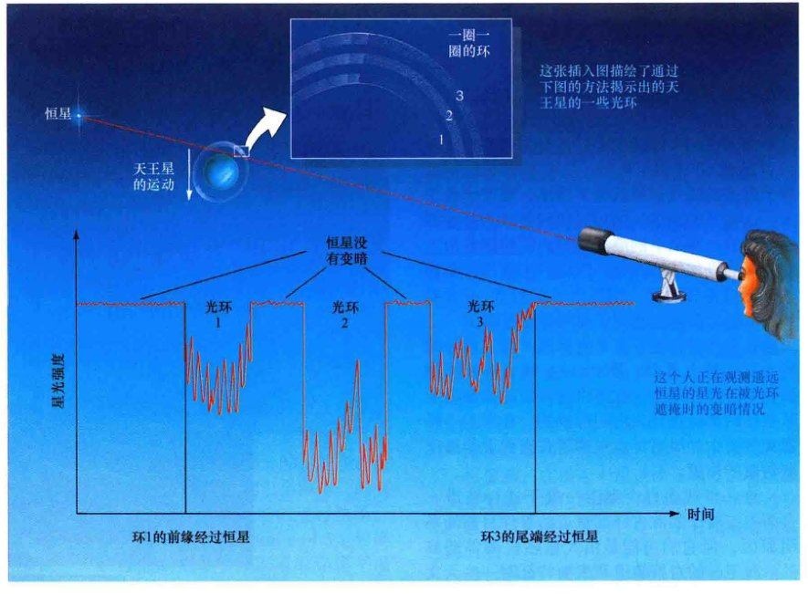
<div class="caption">
<strong>图10.15 恒星星光被掩</strong><br/>
        当一颗行星从遥远恒星和观测者的视线中间穿过时，通过仔细观看遥远星光变暗的情况，天文学家可以推断出该行星的精致细节。这种技术的使用让我们发现了天王星的光环。
    </div>
<p>地基观测揭示了天王星周围共有9个稀疏的光环存在。按照半径增加的顺序，主要的环被命名为 $\alpha$、$\beta$、$\gamma$、$\delta$ 和 $\epsilon$，它们距天王星中心的距离范围从44,000到51,000km不等。它们都位于天王星的洛希极限内——这个极限到行星中心的距离是大约为62,000km。一个较暗弱的环被称为 $\eta$ 环，位于 $\beta$ 和 $\gamma$ 环之间。还有另外三个暗淡的环，分别被称为4、5、6环，位于 $\alpha$ 环和天王星本体之间。1986年，旅行者2号发现了两个更暗的环，一个位于 $\delta$ 和 $\epsilon$ 环之间，一个位于6环和天王星本体之间。图10.16显示出了主要的光环。光环的更多详情见表10.2。</p>
<span class="table-caption">表10.2 天王星的环</span>
<table>
<thead>
<tr>
<th rowspan="2">光环</th>
<th colspan="2">内半径</th>
<th colspan="2">外半径</th>
<th rowspan="2">宽度<br/>(km)</th>
</tr>
<tr>
<th>km</th>
<th>(行星半径的倍数)</th>
<th>(km)</th>
<th>(行星半径的倍数)</th>
</tr>
</thead>
<tbody>
<tr><td>1986U2R</td><td>37 000</td><td>1.45</td><td>39 500</td><td>1.55</td><td>2500</td></tr>
<tr><td>6</td><td>41 800</td><td>1.61</td><td>-</td><td>-</td><td>2</td></tr>
<tr><td>5</td><td>42 200</td><td>1.65</td><td>-</td><td>-</td><td>2</td></tr>
<tr><td>4</td><td>42 600</td><td>1.67</td><td>-</td><td>-</td><td>3</td></tr>
<tr><td>$\alpha$</td><td>44 700</td><td>1.75</td><td>-</td><td>-</td><td>4~10</td></tr>
<tr><td>$\beta$</td><td>45 700</td><td>1.79</td><td>-</td><td>-</td><td>5~11</td></tr>
<tr><td>$\eta$</td><td>47 200</td><td>1.83</td><td>-</td><td>-</td><td>2</td></tr>
<tr><td>$\gamma$</td><td>47 600</td><td>1.86</td><td>-</td><td>-</td><td>1~4</td></tr>
<tr><td>$\delta$</td><td>48 300</td><td>1.90</td><td>-</td><td>-</td><td>3~7</td></tr>
<tr><td>1986U1R</td><td>50 000</td><td>1.96</td><td>-</td><td>-</td><td>2</td></tr>
<tr><td>$\epsilon$</td><td>51 200</td><td>2.00</td><td>-</td><td>-</td><td>20~100</td></tr>
</tbody>
</table>
<p style="font-size: 0.8em; color: #666; text-align: center;">① 大多数天王星的光环是如此之窄，其内外半径几乎没有什么差别。</p>
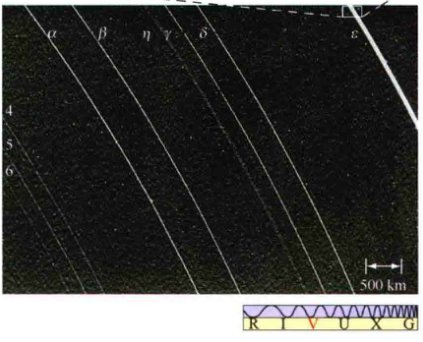
<div class="caption" style="text-align: left; clear: left;">
<strong>图10.16 天王星的光环</strong><br/>
        天王星主要的光环，由旅行者2号拍摄。在这张照片中可以看到在这艘飞船到达之前已知的所有9个光环。从里到外，它们的标记从6到 $\epsilon$。照片的分辨率约10km，只是相当于这些环中大部分的宽度。旅行者2号发现的两个特别暗的光环也可以在这里看到。顶部的插入图显示了 $\epsilon$ 环的特写，揭示了一些内部结构。这个环的宽度平均约30km，特殊的图像处理将插入图的分辨率放大到了约100m——这个大小相当于一个足球场。[美国国家航空航天局(NASA)]
    </div>
<p>天王星的环与土星的环有很大的不同。土星的光环明亮而宽阔、光环之间的空隙相对狭窄；与之刚好相反，天王星的光环是黑暗、狭窄的，间隔很宽。除了 $\epsilon$ 环和弥漫的最内侧的环，天王星的环的宽度均小于约10km，它们之间的间距范围从数百千米到约一千千米。然而，类似于土星的光环，天王星的所有光环的厚度均不到几十米（在垂直于光环平面的方向测量）。</p>
<p>天王星光环内的物质密度可以与土星的A和B环相比。构成土星环的粒子的大小范围从尘埃颗粒到较大的石头，但在天王星的情况下，这些颗粒的大小范围要小得多——很少有直径小于1cm的颗粒。天王星环的颗粒被认为比土星环的颗粒的反射率更低，可能是因为它们都覆盖着与天王星卫星上相同的黑暗物质。$\epsilon$ 环（在图10.16中的插入图中显示了细节）表现出的性质有点像土星的F环。它有轻微的偏心率，约0.008；它的宽度是可变的，虽然在其中没有发现“辫子”结构。它似乎也由许多细环所组成。</p>
<p>像土星的F环一样，天王星狭窄的光环需要有<strong>牧羊犬卫星</strong>来保持其不扩散。(9.4节)事实上，牧羊犬卫星理论的第一次应用就是用来解释天王星光环的，当时这些光环是由掩星发现的，那时，旅行者2号还没有遭遇土星。因此，土星F环的存在，并没有给人们太大的惊喜。据推测，位于内侧的许多小的天王星卫星在塑造环的外观方面发挥了一些作用。旅行者2号探测了天卫六和天卫七，它们是 $\epsilon$ 环的牧羊犬卫星，如图10.17所示。许多其他未被发现的牧羊犬卫星也必然存在。</p>
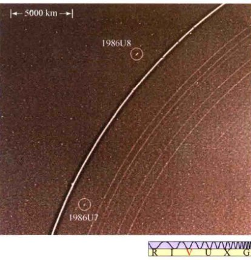
<div class="caption" style="text-align: left; clear: left;">
<strong>图10.17 天王星的牧羊犬卫星</strong><br/>
        这两颗小卫星名叫天卫六 (U7) 和天卫七 (U8)，于1986年由旅行者2号发现。它们“看住”了天王星的 $\epsilon$ 环，保持它不至于扩散。[美国国家航空航天局(NASA)]
    </div>
<h3>海王星的光环</h3>
<p>如图10.18所示，以及表10.3列出的更详细的信息，海王星被五个较黑暗的光环围绕。三个非常窄，像天王星的光环，其他两个广阔而弥漫，更像是木星的光环。较暗的颜色可能由辐射变黑导致，正如前面对天王星卫星的讨论那样。所有的光环都在海王星的洛希极限内。最外层的环（亚当斯环）中的物质比较显著地成团。在地球上，我们看到的不是一个完整的环，而只能看到部分圆弧——看不见的部分仅仅是因为太稀薄（物质没有成团）而难以被探测到。光环与海王星内侧的小卫星之间的联系尚未被确定，但许多天文学家认为，物质成团源于牧羊犬卫星。</p>

<div class="caption" style="text-align: right; clear: right;">
<strong>图10.18 海王星的暗弱光环</strong><br/>
        在这个长曝光的照片中，海王星（中心）在很大程度上曝光过度，并被人为地用仪器遮盖住了，这样使光环更容易被看到。一两个昏暗的环位于内侧的亮环勒威耶环和海王星之间，其他的位于勒威耶环和外侧较亮的亚当斯环之间。[美国国家航空航天局(NASA)]
    </div>
<p>虽然所有的类木行星都有光环系统，但不同行星的光环却有很大不同。围绕行星的光环的形成有某些“标准”的方式吗？此外，光环系统的演化有没有一种标准的方式呢？或者是环的形成和演化过程完全依赖于特定的行星？如果确实是现在表现出来的情况，光环系统是相对短暂的存在，那么它们的形成必然是一个相当普遍的事件。否则，我们不能指望一次看到所有4颗类木行星的光环。有许多迹象表明，个别行星的环境在确定光环系统的外观和寿命方面起着重要的作用。虽然现在我们能理解光环的形成和演化的许多方面，但必须承认，目前还没有关于光环系统的完整理论。</p>
<span class="table-caption">表10.3 海王星的光环</span>
<table>
<thead>
<tr>
<th rowspan="2">光环</th>
<th colspan="2">内半径</th>
<th colspan="2">外半径<sup>①</sup></th>
<th rowspan="2">宽度<br/>(km)</th>
</tr>
<tr>
<th>km</th>
<th>行星半径的倍数</th>
<th>km</th>
<th>行星半径的倍数</th>
</tr>
</thead>
<tbody>
<tr><td>加勒比 (1989N3R)</td><td>40 900</td><td>1.65</td><td>42 900</td><td>1.73</td><td>2000</td></tr>
<tr><td>勒威耶 (1989N2R)</td><td>53 200</td><td>2.15</td><td>-</td><td>-</td><td>100</td></tr>
<tr><td>拉塞尔<sup>②</sup> (1989N4R)</td><td>53 200</td><td>2.15</td><td>57 200</td><td>2.31</td><td>4000</td></tr>
<tr><td>阿拉戈<sup>②</sup> (1989N4R)</td><td>57 200</td><td>2.31</td><td>-</td><td>-</td><td>100</td></tr>
<tr><td>亚当斯 (1989N1R)</td><td>62 900</td><td>2.54</td><td>-</td><td>-</td><td>50</td></tr>
</tbody>
</table>
<p style="font-size: 0.8em; color: #666; text-align: center;">
        ① 海王星的三个光环非常窄，其内外半径之间几乎没有什么差别。<br/>
        ② 拉塞尔和阿拉戈最初被确定为单环。
    </p>
<div class="concept-check">
<strong>概念理解检查</strong><br/>
        天王星的 $\epsilon$ 环与土星的F环有哪些共同点？
    </div>
<aside class="ultimate-question">
<h3>终极问题</h3>
<p>所有四颗类木行星基本上都是巨大的气体球围绕着内部深处较小的岩石球。它们的云顶很冷，靠近内核表面的地方很热——这样的环境不大可能支持生命。但一个基本问题萦绕在许多天文学家的脑中：有浮力的、漂浮的生命是否可能出现在中间高度处——那里的温度比较温和？如果是这样，这些生命形式一定会较小：如果它们太大，它们就会降到内部，然后被“煮熟”；但如果它们太小，它们就会浮到云层的顶部，然后被冻僵。</p>
</aside>
<hr/>
<aside class="sidebar">
<span class="sidebar-title">章节回顾 - 小结</span>
<ol>
<li>天王星和海王星这两颗外围行星并不为古代的天文学家所知。天王星在18世纪因一个偶然的机会被发现。天王星被发现后，表现出很细微的非开普勒性的轨道运行，这暗示了第八颗行星的存在，经过数学计算，海王星被发现。在冲日时，天王星用肉眼勉强可见。在望远镜中，天王星呈现为淡绿色的圆盘。海王星不能用肉眼看到，但望远镜将其呈现为一个微小的偏蓝的圆盘。今天，我们关于这两颗巨行星的知识主要是通过由旅行者2号获取的数据得来的。</li>
<li>外行星的质量通过环绕其运行的卫星测量得知。天王星和海王星的半径则相对知之甚少，直到20世纪80年代旅行者2号的飞越。天王星和海王星有类似的整体性质：它们比木星或土星更小、质量更轻，但密度更高。因为尚不清楚的原因，天王星的自转轴接近黄道面，导致在其绕太阳公转时因为太阳加热而出现极端的季节变化。天王星上几乎看不出来什么表面特征，但由旅行者2号发回的图像经过计算机增强之后，显示了大气中的云层和在天王星霾层之下的流动模式。海王星虽然离我们更远，但却有清晰地大气特征，因为这里气温更温暖、霾更少。海王星上的<strong>大暗斑</strong>(p.252)与木星的大红斑有许多相似之处，但大暗斑在1994年消失了。</li>
<li>相对于木星或土星，天王星和海王星相对更高的密度意味着大的并且占行星总质量比例更高的岩石内核。不像其他类木行星，天王星没有多余的热量排放。海王星的多余能量的来源类似于木星，最有可能是行星形成时遗留的热量。天王星和海王星都有充足的磁层。旅行者2号发现这两颗行星的磁场相对于自身的自转轴有大角度的倾斜。这些大倾斜的原因目前还是未知的。</li>
<li>除了两颗卫星之外，天王星的其余所有卫星都在该行星的几乎垂直于黄道的赤道平面上运行，轨道是圆形的同步轨道。类似土星的卫星，天王星的中型卫星主要由岩石和水冰组成。它们中的许多都布满了环形山，在某些情况下，它们恐怕已经接近于被我们现在看到的这些环形山所对应的陨石撞击而摧毁的边缘。奇怪的卫星天卫五上的地质学结构表明了这颗天体在过去遭受了反复而猛烈地撞击。海王星的大卫星海卫一有一个断裂的表面，主要由水冰和薄薄的氮气层构成，这个氮气层可能因表面上的氮气“喷泉”而产生。海卫一是太阳系中唯一以逆行轨道绕其母行星公转的大卫星。这个轨道是不稳定的，最终将导致海卫一被海王星的引力撕裂。</li>
<li>天王星有一系列黑暗、狭窄的光环，人们通过在地球上观测<strong>掩星</strong>(p.258)——它们会遮掩背景恒星的光——而首次发现它们。牧羊犬卫星使得这些光环很窄。海王星有三个像天王星的窄环和一个像木星的宽阔的环。这四个环由旅行者2号发现。外围巨行星的光环和卫星较暗的颜色可能是由<strong>辐射变黑</strong>(p.255)引起的——暴露于太阳的高能辐射会慢慢导致天体的冰冻表面上形成一个黑暗的碳氢化合物层。</li>
</ol>
</aside>
<section class="exercises">
<h2>复习与讨论</h2>
<ol>
<li><strong>LO1 POS</strong> 为什么天文学家怀疑在天王星之外有第八颗行星？</li>
<li><strong>POS</strong> 天文学家如何确定该在哪里寻找海王星？</li>
<li>天王星为何会像现在这样自转？</li>
<li><strong>LO2</strong> 天王星和海王星的整体颜色和外观与木星和土星有什么不同？为什么？</li>
<li>为什么在海王星表面比在天王星表面更容易看到风暴和其他大气特征？</li>
<li><strong>LO3</strong> 天王星和海王星的内部与木星和土星有什么不同？</li>
<li>与地球相比，天王星和海王星的磁场是怎么样的？</li>
<li>描述天卫三上的一天。</li>
<li><strong>LO4</strong> 天卫五有什么独特之处？给出一个可能的解释。</li>
<li>海王星的卫星系统与其他类木行星的有何不同？对于海王星卫星系统的起源，这些不同意味着什么？</li>
<li>是什么导致了海卫一上的“间歇泉”？</li>
<li><strong>POS</strong> 天王星和海王星的光环是怎么发现的？</li>
<li><strong>LO5</strong> 天王星的光环较黑暗、狭窄，环间的空隙很宽。这些性质中的哪些导致它们与土星光环不同？</li>
<li>海王星的光环与天王星和土星的光环有什么不同？</li>
<li><strong>POS</strong> 为什么1781年发现天王星是如此轰动？今天的天文学家还会有类似的轰动性发现吗？</li>
</ol>
<h2>概念自测：选择题</h2>
<ol>
<li>要想发现新行星，最重要的是什么？(a) 复杂的计算和大型超级计算机；(b) 耐心使用改进的技术；(c) 从一所知名大学获得天文学学位；(d) 纯粹的运气。</li>
<li>天王星被发现时，大约同一时间发生了什么？(a) 哥伦布到达北美；(b) 美国发表独立宣言；(c) 美国内战；(d) 美国的大萧条。</li>
<li>与天王星相比，海王星：(a) 小得多；(b) 大得多；(c) 拥有大致相同的尺寸；(d) 倾斜在其一侧。</li>
<li>最大直径的类木行星也倾向于：(a) 具有最慢的自转速度；(b) 在轨道上环绕太阳公转的速度最慢；(c) 拥有最少的卫星；(d) 有着与自转轴对得最齐的磁场。</li>
<li>天王星的五颗最大的卫星：(a) 所有的轨道都在黄道平面上；(b) 永远不能运行到天王星和太阳之间；(c) 所有的轨道都位于行星的赤道正上方；(d) 所有的轨道都明显偏心。</li>
<li>环形山较少的卫星可能：(a) 是被捕获的小行星；(b) 被其母行星保护避免了被撞击；(c) 较大的环形山抹去了较小的；(d) 有温暖的内部。</li>
<li>一颗环绕遥远的恒星运行的气态巨行星预计会拥有：(a) 像土星的光环系统；(b) 比水的密度更低；(c) 很多大型的卫星以不同的方向环绕它运动；(d) 在它的光谱里有氢存在的证据。</li>
<li><strong>VIS</strong> 天王星的光环是由星光被遮掩而发现的，如图10.15（“星光被遮掩”）所示。如果天王星相对地球更迅速地移动，图中的图形将出现：(a) 水平方向更加压缩；(b) 一样；(c) 水平方向伸长。</li>
<li>环绕一颗行星运行的卫星可以使天文学家能够测量：(a) 该行星的质量；(b) 该卫星的质量和密度；(c) 该行星环的结构；(d) 该行星被撞击的历史。</li>
<li>太阳系中最像海王星的天体是：(a) 地球；(b) 木星；(c) 土星；(d) 天王星。</li>
</ol>
<h2>问答</h2>
<ol>
<li>从天王星看太阳的角直径是多少？将你的答案与从天王星云顶看到的天卫三的角直径相比较。你在天王星会看到日食吗？</li>
<li>在最靠近时，海王星施加在天王星上的引力有多大？将你的答案与太阳对天王星的引力相比较。</li>
<li>估计图10.7中云A的速度，假设它位于赤道附近。你的估计与该行星的自转速度是否一致？</li>
<li>如果天王星核心的半径是地球半径的两倍，平均密度为8000kg/m<sup>3</sup>，那么天王星的核心以外的部分的质量是多少？核心占该行星总质量的比例是多少？</li>
<li>将天王星和海王星所有卫星的质量加在一起，（忽略小卫星的质量，它们对结果的影响不大）然后将这个总和与月球的质量相比较。</li>
<li>根据维恩定律，天王星的辐射峰值波长是多少？这个波长位于电磁波谱的哪个位置？</li>
<li>在关于行星大气层的早期讨论的基础上，你会期望海卫一能够保留住氮气大气吗？</li>
<li>海卫一有多靠近海王星的洛希极限？</li>
</ol>
<h2>实践活动</h2>
<p><strong>协作项目</strong>：寻找海王星需要坚定的努力！最好使用天文望远镜进行搜索，但安装在一个稳定支架上的高倍双筒望远镜也能够做到。比较天王星和海王星，哪颗行星显得更蓝？通过天文望远镜观测，这两颗行星像圆盘吗？或者它们看起来更像是光点？在一段日子或者数周时间里重复你的观测。能否在视场中发现这两颗行星相对于背景恒星有任何运动吗？</p>
<p><strong>个人项目</strong>：在网上或杂志上查询星图，并在夜空中找到天王星。它可能是肉眼隐约可见的，但望远镜将让搜索变得更加容易。（提示：天王星的光芒比背景恒星更加稳定。）你能直接利用你的眼睛发现这颗星球的颜色吗？通过望远镜呢？</p>
</section>
</article>